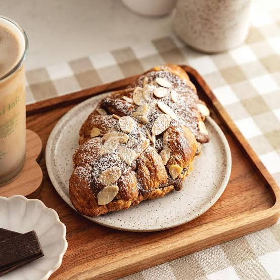
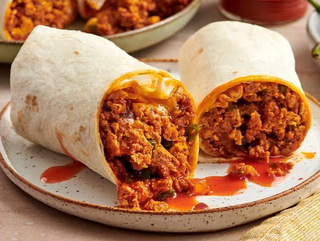

Our Story
The Corner Cup was created with one simple goal – to bring people together over exceptional coffee and freshly prepared food. From your morning flat white to a relaxed weekend brunch, every visit is designed to feel warm, welcoming and memorable.
We believe a great café is about more than just what's on the menu. It's about friendly faces, comfortable surroundings and creating a space where everyone feels at home, whether you're catching up with friends, studying, working remotely or simply enjoying a quiet moment.
What We Stand For
Everything we do is built around quality, community and great service.
Quality Coffee
Every cup is carefully prepared using premium beans and expertly crafted by our baristas.
Fresh Food
From breakfast favourites to homemade cakes, everything is selected with freshness and flavour in mind.
Community
We're proud to be a welcoming meeting place for friends, families, students and local businesses.
Comfort
Relax in a cosy environment designed to help you slow down and enjoy every visit.
Life at The Corner Cup
A glimpse of our café, handcrafted drinks and freshly prepared food.




More Than Just Coffee
Whether you're looking for your daily caffeine fix, a delicious brunch, somewhere to work for the afternoon or simply a cosy place to relax, The Corner Cup offers a welcoming atmosphere for every occasion.
Our friendly team, carefully crafted menu and comfortable surroundings make every visit one to enjoy. We can't wait to welcome you through our doors.
Explore Our Menu